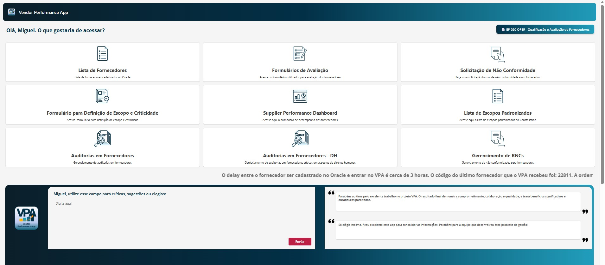

Vendor Performance App (VPA)
O VPA integra bases de dados relacionadas ao gerenciamento de fornecedores fornecendo informações relevantes para análise e tomada de decisão, com fácil acesso a todos os colaboradores da empresa, garantindo um gerenciamento inteligente dos parceiros da Constellation. O VPA foi estruturado em 9 módulos diferentes. Cada um deles corresponde a um processo que compõe o gerenciamento de nossos fornecedores. O aplicativo contempla desde a definição de escopo e criticidade no início do processo, chegando até a realização de avaliações de desempenho e registro de não conformidades.

Gestão da Excelência Operacional (GEO)
O GEO é um aplicativo desenvolvido para apoiar as iniciativas conduzidas pelo time de Excelência Operacional, especialmente a preparação para o PEO Sondas. Disponível para todos os colaboradores da companhia, o GEO oferece um guia completo para atendimento à auditoria do PEO, permitindo navegar pelos requisitos e consultar, de forma prática e organizada, como cada um deles é atendido pela Constellation.

Gestão de Abrangências
O sistema Gerenciamento de Abrangências foi desenvolvido para otimizar o gerenciamento dos alertas emitidos e das possíveis abrangências geradas para as unidades do nosso principal cliente, a Petrobras. Com ele, é possível acompanhar e tratar cada alerta de forma mais ágil e assertiva, reduzindo ruídos operacionais e garantindo que as decisões sejam baseadas em dados estruturados e confiáveis. Ao centralizar e organizar essas informações, o sistema permite uma visão clara e atualizada das abrangências, evitando retrabalhos, falhas de comunicação e atrasos na resposta a eventos críticos. Mais do que uma ferramenta de controle, o Gerenciamento de Abrangências entrega eficiência, rastreabilidade e inteligência operacional para a gestão das unidades da Petrobras, transformando alertas em ações rápidas e bem direcionadas.
AudApp
O AudApp centraliza, simplifica e fortalece a gestão das informações relacionadas às auditorias ANP e às práticas do SGSO. Em um único ambiente, o aplicativo consolida o banco de dados completo das auditorias já realizadas, incluindo o detalhamento das práticas e requisitos avaliados, as evidências correspondentes e a matriz de correlação que permite visualizar de forma clara como cada unidade da Constellation atende a cada prática de gestão. Além disso, o AudApp disponibiliza timelines individuais para cada sonda, apresentando de forma visual e estruturada todas as etapas do processo — desde a atualização dos requisitos até os principais eventos relacionados à aprovação do DSO de cada unidade. Essa linha do tempo organiza prazos, marcos críticos e pontos de controle, permitindo anexar documentos, fotos, relatórios e registros de validação em cada fase. Com esses recursos, o aplicativo fortalece a rastreabilidade, a transparência e a padronização, assegurando maior conformidade com o Plano de Auditoria ANP, com o processo de aprovação do DSO e contribuindo diretamente para o fortalecimento do Sistema de Gestão como um todo.

Automatizações (Power Automate)
Mais de 30 fluxos criados, para automações de processos existentes, ou suporte as aplicações citadas acima.